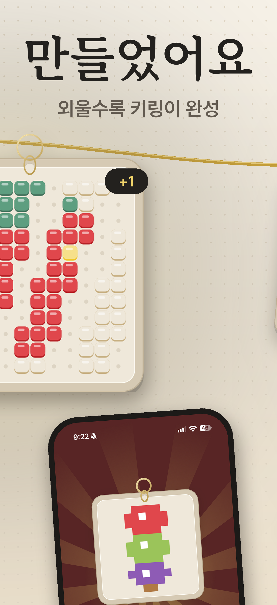
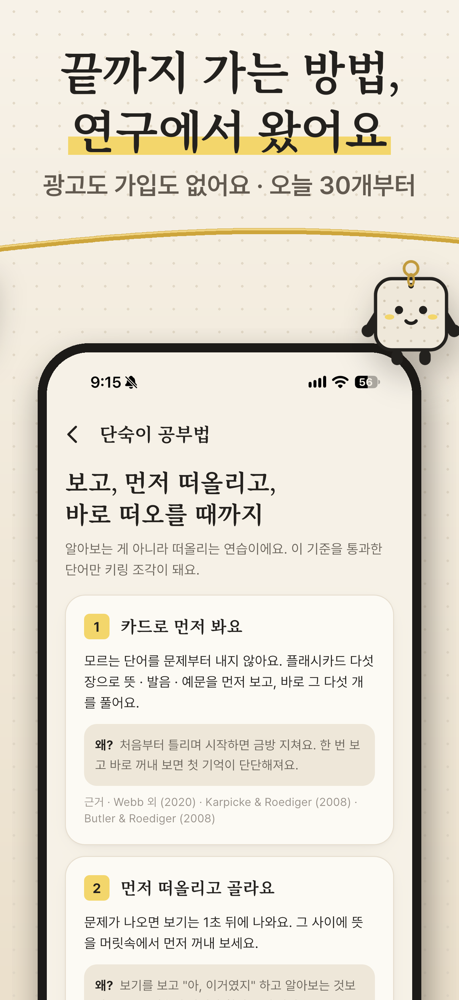
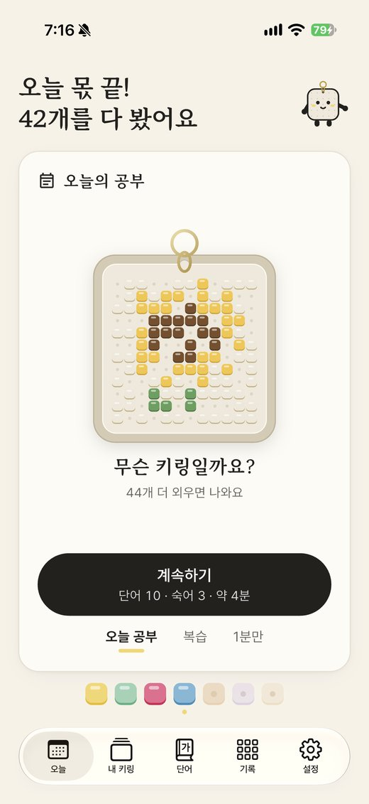

단숙이 스레드 30일
하루 한 편씩 30일 동안 올리는 계획이에요. 편마다 첫 글과 이어 달 답글을 그대로 담았고, 스레드 화면 그대로 보여 줘요. 영상 · 사진을 누르면 크게 열려요. 검토본 8편(dansuki.com/threads)을 뼈대로 두고, 그 사이를 공부 팁 · 단어 퀴즈 · 개발 이야기로 채웠어요.
왜 30일, 왜 하루 한 편
여러 가이드가 하루 1~3편을 권해요. 다만 하루에 여러 편을 올리면 내 글끼리 노출을 나눠 가져요. 그래서 혼자 꾸준히 하기엔 하루 1편이 맞아요. 반응이 좋은 주에만 가벼운 2편째를 더해요.
스레드 글은 올린 뒤 2~4시간 안에 반응이 거의 다 끝나요. 인스타보다 글의 수명이 짧아서, 매일 올려야 계속 피드에 남아요.
2024년 11월부터 스레드는 이미 팔로우한 계정의 글을 먼저 보여 줘요. 그래서 내 글만 올리지 말고 다른 공부 · 1인 개발 계정에 먼저 답글을 달아 팔로워를 모아요. 답글 달 곳 40곳 →
같은 모양의 글만 이어지면 노출이 줄어든다는 분석이 있어요. 그래서 다섯 종류를 돌려 가며 올리고, 앱을 소개하는 편은 30편 중 10편이에요(첫날 고정 소개 포함).
출처: How Often Should You Post On Threads · Best Time to Post on Threads 2026 · How the Threads Algorithm Works · Mosseri: 링크 글 노출 개선 · 스레드 · X는 횟수. 정확한 숫자는 가이드마다 달라서, 셋 이상이 같은 말을 한 것만 기준으로 삼았어요.
글 다섯 종류
| 종류 | 편수 | 무엇 | 왜 |
|---|---|---|---|
| 장면+앱 | 8 | 센 버전 A 4편 · 순한 버전 B 4편. 학생의 한 장면 → 첫 답글에서 단숙이 → 질문 | 앱을 알리는 본편이에요. 20초 영상을 붙여요. |
| 단어 퀴즈 | 7 | 매일 쓰는 우리말(미루다 · 구독하다 · 망설이다)을 영어로 떠올리기 → 정답은 1시간 뒤 답글에 | 뜻은 너무 익숙한데 영어는 안 떠올라서 궁금해져요. 앱의 "뜻 → 영어" 문제를 직접 해 보는 셈이고, 다 앱에 있는 단어예요. |
| 공부 팁 | 5 | 앱 없이도 바로 쓰는 단어 공부 요령 | 저장하고 싶은 글이에요. 앱 얘기는 넣지 않아서 신뢰가 쌓여요. |
| 만드는 이야기 | 6 | 1인 개발자가 받은 의견 → 고친 것 | 만드는 사람이 보이면 믿음이 가요. 1인 개발자들의 응원 · 재게시가 잘 붙어요. |
| 질문 | 2 | 편이 갈리는 질문 하나 | 답글이 길게 이어져요. |
| 학부모 | 1 | 검토본 6편, 수능 주간에 | 학생 대상 홍보를 쉬는 동안 학부모에게 말을 걸어요. |
| 응원 | 1 | 수능 전날 응원(앱 얘기 없음) | 수능 주간에는 홍보하지 않아요. |
기존 8편 기획과 영상은 어디로 갔나
| 검토본 8편 | 첨부 | 30일 안에서 |
|---|---|---|
| 1 월요일 계획, 화요일에 놓쳤다면 | 🎬 01-keep-going (20초) | 3일 · B 순한 버전 · 원문 그대로 |
| 2 단어장 다시 시작하면 또 abandon | 🎬 02-recall-quiz (20초) | 9일 · 영상은 A "the랑 and뿐"에 붙임. 같은 주제의 첫 줄은 8일 A "abandon만 10번"으로 시험 |
| 3 학원 단어 시험은 통과했는데 | 🎬 03-spaced-review (20초) | 11일 · B · 원문 그대로 |
| 4 5분 남았는데 그냥 넘기는 날 | 🎬 04-one-minute (20초) | 14일 · B · 원문 그대로 |
| 5 144개가 쌓이면, 돈으로 못 사는 키링 | 🎬 05-keyring-drop (20초) | 18일 · B · 원문 그대로 |
| 6 단어 외웠어 대신 건네는 앱 (학부모) | 🎬 06-parent-invitation (20초) | 23일 · 수능 주간 학부모편 · 원문 그대로 |
| 7 논문 15편에서 참고한 공부법, 세 가지 | 🖼 07-research-method | 15일 · 이미지는 A "벼락치기" 편에 붙임 |
| 8 시작 전에 지치는 공부 앱 | 🖼 08-easy-start | 21일 · 이미지는 A "3단계 만에 삭제" 편에 붙임 |
20초 영상 6편과 이미지 2장은 하나도 빠지지 않고 다 쓰였어요. 예전에 만든 소개 영상(reels/dansuki-reel-1~7)과 퀴즈 영상(reels/quiz/)은 이번 30일에는 쓰지 않아요. 같은 주제를 새 20초 영상이 대신해서예요. 인스타 릴스에 올릴 때 다시 써요.
센 버전 vs 순한 버전 시험
장면+앱 8편을 반씩 나눠서, 같은 계정 · 같은 시간대에 올리고 반응을 비교해요.
| A 센 버전 (제 초안) | B 순한 버전 (검토본) | |
|---|---|---|
| 첫 줄 | 밈 · 과장된 장면 · "ㅋㅋ" (abandon만 10번, the랑 and뿐, 3단계 만에 삭제) | 차분한 장면 · 공감 (한 번 놓침, 또 멈칫, 5분 남음) |
| 날짜 | 8일 · 9일 · 15일 · 21일 | 3일 · 11일 · 14일 · 18일 |
| 똑같이 지키는 것 | 근거는 정확하게(85% · 최적 간격 단정 없음) · 개발자 본인으로 말하기 · 없는 기능 말하지 않기 | |
비교할 숫자: 편마다 올리고 24시간 뒤의 조회 · 답글 · 재게시 · 저장 · 새 팔로워 · 링크 클릭. 판단: 2주 차가 끝나는 11/2에 A 2편(8 · 9일)과 B 3편(3 · 11 · 14일)을 먼저 비교하고, 11/10에 8편 전부로 다시 봐요. 한쪽이 답글 · 팔로워에서 1.5배 넘게 앞서면 남은 기간은 그쪽으로 써요. "기분 나쁘다", "놀리냐" 같은 답글이 달리면 숫자가 좋아도 A를 한 단계 순하게 해요.
| 편 | 버전 | 조회 | 답글 | 재게시 | 저장 | 새 팔로워 | 링크 클릭 |
|---|---|---|---|---|---|---|---|
| 3일 월요일 계획 | B | ||||||
| 8일 abandon만 아는 사람 | A | ||||||
| 9일 the랑 and뿐 | A | ||||||
| 11일 학원 단어 시험 | B | ||||||
| 14일 5분 남았는데 | B | ||||||
| 15일 벼락치기 | A | ||||||
| 18일 키링 144개 | B | ||||||
| 21일 3단계 만에 삭제 | A |
올리기 전에 (10/19까지)
- 프로필 이름: 단숙이 | 수능 영단어 암기 앱
- 소개 (150자 안): 외울 때마다 키링이 한 조각씩 🔑 / 수능 영단어 3,306 · 숙어 510 / 4초 안에 떠오르면 내 단어 / 무료 · 광고 없음 · 가입 없이 / iPhone (Android 준비 중)
- 프로필 링크:
dansuki.com/?utm_source=threads&utm_medium=bio - 1일 차 소개 글을 올리자마자 고정해요.
스레드 프로필은 인스타그램 계정과 이어져서 인스타 소개와 같게 맞춰요(marketing/instagram.md). 인스타 쪽 숙어 수 580은 510으로 고쳐야 해요.
답글 달 곳 (2026-10-17 확인)
2026-10-17에 프로필을 직접 열어 소개 · 팔로워 · 최근 글 날짜를 확인한 40곳이에요. 미성년자로 보이는 학생 개인 계정은 핸들을 적지 않았어요. 답글 예시는 그 계정의 실제 글 성격에 맞춘 의견이고, 앱 얘기는 넣지 않았어요.
- 하루 3~5개 답글만. 같은 계정에 연달아 달지 않는다. 스레드 운영 팁 글들도 "답글이 또 하나의 글"이라고 하지만, 몰아서 달면 봇처럼 보인다.
- 처음 3번은 앱 이야기 0. 의견·경험·질문만. 상대가 "뭐 만드세요?"라고 물으면 그때 짧게 말한다.
- 학생 계정에는 먼저 다가가지 않는다. #고3 태그의 학생 글은 읽기만 한다. 학생이 먼저 단숙이 글에 오면 답한다.
- 시험일·D-day 압박 글에는 '암기' 쪽 의견만. 단숙이는 시험 앱이 아니라 암기 앱이다(메모리 원칙). D-day 응원 글에 숫자·카운트다운으로 맞장구치지 않는다.
- 상위권 계정(의대·SKY 컨설팅)에는 정보 답글만. 단숙이 타깃은 기초부터다.
- 스하리·맞팔 품앗이 태그는 쓰지 않는다.
- 이 목록은 2026-10-17 기준이다. 한 달에 한 번 팔로워·활동을 다시 확인하고, 활동이 끊긴 계정(@o_rule.app, @sat_influencer)은 뺀다.
1. 수험생이 보는 공부 기록·루틴·스터디카페
| 계정 | 팔로워 | 왜 · 최근 활동 | 답글 예시 |
|---|---|---|---|
| @study_cracked 스터디크랙. 3수 끝에 연세대 간 정시 컨설턴트, 대치동 조교·과외 경력 | 2,272 | 현역·N수생이 보는 계정. 오답·멘탈 이야기가 많아 '매일 조금씩 꾸준히' 이야기와 맞음 2026 활동 확인(3~4일 전 글, 2026년 3월 모의고사 글) | "오답 데이터에 집착하라는 말 공감돼요. 영어는 틀린 문제에 나온 모르는 단어만 따로 모아도 그게 제일 정확한 단어장이 되더라고요." |
| @damn_studying 수험생각. 중고등 입시 학원 운영, 공부 루틴 콘텐츠 | 미확인(페이지에 안 보임) | 하위권·노베이스 루틴 글이 있어 '기초부터' 타깃과 겹침 2026 글 확인(“하루 순공 1시간 미만 하위권 주말 루틴” 등) | "순공 1시간 미만 학생한테 주말 루틴부터 주는 거 현실적이네요. 처음엔 시간보다 '매일 앉는 것' 자체가 목표인 게 맞는 것 같아요." |
| @momenlapse.app 공부 타임랩스 앱 모먼랩스. 본업 디자이너인 1인 메이커 | 17 | 공부 기록 앱을 혼자 만드는 사람. 수험생 기록 문화를 같이 고민할 수 있음 2026-07 글(날짜만 보이고 연도 표기는 미확인) | "결과보다 과정 기록이라는 말 좋네요. 디자인 디테일에 붙잡혀서 개발이 늦어지는 거 저도 매번 겪어서 남 일 같지 않아요." |
| @sin1log 공시생 시니. 성인 공부 브이로그, 열품타 테마 제작 | 281 | 공부 앱을 '예쁘게 쓰는' 문화를 만드는 성인 사용자. 앱 UI에 대한 시각이 있음 2026 활동(5~6일 전 글) | "직접 만든 열품타 테마 귀여워요. 공부 앱은 예뻐야 손이 간다는 말 진짜 맞는 것 같아요." |
| @study.love.life_ 김아린. 공무원 영어 독학법, 스터디윗미 타임랩스, 회독 워크북 저자 | 452 | 성인 수험생 영어. '회독'이라는 반복 암기 관점이 같음 2026-10 글 확인(10월 8~9일, 5~6일 전) | "회독 워크북이라는 이름 좋네요. 영어는 새 걸 더 보는 것보다 같은 걸 몇 번 다시 보느냐가 더 중요하다고 느껴요." |
| @the_dingle_daejeon 대전 송촌동 스터디카페 '더딩글' 사장(30대) | 191 | 수험생이 매일 오는 공간 운영자. "온라인 인증보다 오프라인 루틴이 강하다"는 글이 있음 2026 글 확인(2/5, 3/31 3주년 등) | "매일 오는 곳에 내 빈자리가 보인다는 말 와닿아요. 앱으로 기록하는 것도 결국 '빈자리'를 보이게 하는 거라고 생각했어요." |
| @study9.9 대구 수성구 '스터디나인 황금점' 독서실형 스터디카페 | 174 | 지역 수험생 공간. 답글보다 '좋아요·공감' 위주로 가볍게 2026-09 글 확인(9/14~9/17) | "충전기 메모 이야기 따뜻하네요. 조용한 배려가 쌓이는 공간이면 공부도 더 오래 하게 될 것 같아요." |
| (유형만) 고3·N수 공부 인증 개인 계정류 #고3 · #고3수험생 태그에서 보이는 학생 본인 계정 | — | 실제 타깃이지만 미성년자 가능성이 높아 먼저 답글을 달지 않는다. 그들이 단숙이 글에 먼저 답글을 달면 그때 답한다 활발 | — |
| (유형만) 해외풍 study with me·데스크 셋업 계정류 영어 해시태그(#studywithme #examseason) 쓰는 공부 무드 계정 | — | 미성년자 가능성이 있어 핸들을 적지 않음 활발 | — |
2. 영어·영단어·수능 영어 강사/교육 크리에이터
| 계정 | 팔로워 | 왜 · 최근 활동 | 답글 예시 |
|---|---|---|---|
| @eng_mayssam08 중고등 영어 과외 쌤(2008년부터), 중하위권 성적 올리기 특화, 어휘 자료 제작(쏠북 저자) | 189 | 단숙이 타깃(기초·중하위권)과 가장 정확히 겹침. 어휘 학습에서 예문을 강조 2026 활동 확인(8월 12~18일 글) | "교재 예문이 중요하다는 말 공감해요. 하위권 아이들은 뜻 하나 외우는 것보다 쉬운 예문 한 줄로 기억하는 게 훨씬 오래가더라고요." |
| @sgenglishmentor Seonggill Kim. 초등~성인 통합 영어, 수능·토플 등 | 218 | "단어 암기 중독·불안"에 대해 깊게 쓰는 강사. 단숙이의 '덜 외우고 오래 남기기' 고민과 같은 주제 매일 활동(14시간 전 글 확인) | "익숙한 단어 암기에서 벗어나면 불안해진다는 말 정말 맞아요. 그래서 오히려 '암기처럼 보이는' 형식은 남기고 내용을 문맥 쪽으로 바꾸는 게 현실적이겠다는 생각이 들었어요." |
| @daily5english 오영완(오늘 영어공부 완료). 매일 영어 5개 | 41.9K | '하루 적은 양 매일'이라는 형식이 단숙이와 같음 2026-06-14 글 확인 | "하루 5개라는 숫자가 좋네요. 부담이 없어야 다음 날도 열게 되는 것 같아요. 주제별로 묶으니까 기억도 더 잘 남고요." |
| @mail_english 매일영어. 하루 3개 실전 표현 | 126K | 대형 영어 계정. 답글이 많이 보이는 곳이라 의견 답글 한 줄로 존재감 2026-10 활동(10/7~10/9 글) | "세 문장을 대화로 이어서 외우게 하는 방식 좋아요. 단어를 따로 외우는 것보다 상황째 기억나니까 훨씬 덜 까먹어요." |
| @1_minenglish 1분영어. 쉬운 단어로 네이티브 1일 1문장 | 3,902 | '쉬운 단어'를 강조하는 결이 기초 타깃과 맞음 2026-09-03 글 확인 | "‘That tracks’ 같은 표현은 아는 단어인데 뜻이 안 떠오르는 게 제일 아까운 경우 같아요. 쉬운 단어 다시 보기 좋네요." |
| @talktalkenglish_online 황지은 톡톡잉글리쉬. 영어교육 20년차 온라인 관리형 학원 원장 | 12.3K | 2-3-5-7 간격 복습법 글을 쓴 원장. 간격 반복이 단숙이 핵심과 같음 매일 활동(2~13시간 전 글) | "간격 두고 반복하면 장기 기억으로 간다는 원리, 시험 준비 말고 평소 단어에도 그대로 쓰면 좋겠어요. 다음 날 복습이 제일 중요하다는 것도요." |
| @daechi_spectre 대치 스펙터 학원 신용준 원장, 영어 강사(2017~) | 5,629 | 단어 암기 도구·강의 추천 글을 쓴 적이 있음. 학부모·학생 모두 봄 2026-10-08 글 확인 | "단어 도구를 '그림·연상·랩'처럼 방식별로 나눠 주신 거 유용하네요. 아이마다 맞는 방식이 정말 다른 것 같아요." |
| @gaflkongkam 공도형. 경기외고 전문 공감학원 원장, "영어는 결국 생각의 힘" | 6,501 | 수능 영어 공부법('양치기' 글 등)을 구체적으로 씀. 강사 커뮤니티 대화가 활발 매일 활동(1~4일 전 글) | "대충 아는데 틀린 문제만 파라는 기준 명확하네요. 그 문제들에 나온 단어만 따로 외워도 체감이 클 것 같아요." |
| @yoojasam 상큼유자쌤. 수능·편입·공무원 영어 과외 강사 | 2,257 | 초등~수능 영어 로드맵, 학년별 영단어 권수를 정리하는 강사 최근 글 날짜 미확인(주제만 확인: 천일문 문법, 반지의 제왕 어휘) | "학년별로 단어 권수를 끊어 주신 로드맵 좋네요. 중3에서 고등 단어로 넘어가는 시점이 제일 막막하다는 얘기 많이 들어요." |
| @semo_nemo_english Hyeseon Kim. 영어 강사로 보임(고등학생 수업 이야기) | 2,284 | 수업 현장 이야기를 가볍게 씀. 공감 답글이 잘 어울리는 톤 매일 활동(9시간~3일 전) | "중3 때는 ‘고3 되면 이런 거 하는구나’까지만 해도 충분하다는 말 좋아요. 미리 겁먹게 하는 것보다 그게 낫죠." |
3. 공부법·학습 심리·입시
| 계정 | 팔로워 | 왜 · 최근 활동 | 답글 예시 |
|---|---|---|---|
| @mind.os.study 마인드OS · 뇌과학 공부법. 서울대 의대 졸업, 정신건강 분야, 《뇌는 원래 공부를 싫어한다》 저자 | 1,916 | 인출(백지 복습)·뇌과학 기반 공부법. 단숙이의 '떠올리기' 설계와 같은 근거 2026 활동(7~8월 글, #공부법 태그 07/24/26) | "백지에 기억나는 걸 적는 게 다시 읽기보다 효과 있다는 거, 단어에도 그대로 적용되더라고요. 뜻을 보기 전에 먼저 떠올려 보는 1초가 차이를 만드는 것 같아요." |
| @memory_yoncode 연세대 졸업 전문직, 암기법 공유 | 2,844 | '관계로 연결해 외우기', 40분+휴식 등 암기 자체가 주제 2026 활동(#공부법 태그 03/12/26) | "관계로 엮어서 외우라는 거 공감해요. 영단어도 비슷한 뜻끼리 묶으면 헷갈리고, 오히려 한 장면 속 단어끼리 묶어야 잘 남더라고요." |
| @nadaun_lab 서울대 교육학 학·석사, 과학고·일반고 10년 교사 출신 학습 컨설턴트, 뉴스레터 | 10K | 공부 감정·시험 불안·실패 활용을 다룸. '계속 쓰고 싶게' 만드는 감정 설계와 연결 매일 활동(2시간 전 글) | "공부와 관련된 감정을 다루는 능력이라는 표현 좋네요. 틀렸을 때 기분이 덜 나빠야 다음 날도 다시 연다고 느껴요." |
| @_classday 클래스데이. 대치·분당 교육 브랜드 | 18.1K | "일주일에 70개보다 매일 10개" 같은 단어 암기 팁 글이 있음 활동 중(최근 글 확인, 날짜 미표기) | "주말에 몰아서 70개보다 매일 10개가 낫다는 거 정말 맞아요. 숫자는 작아도 끊기지 않는 게 제일 어렵죠." |
| @keepdancing02 김형근. 수능 국어 비문학 전문 강사, 학원 원장, 입시 컨설팅 | 약 10.6K | 과목은 국어지만 '중학생 때 공부 습관' 이야기를 자주 함. 수험생·학부모 모두 봄 매일 활동(3시간 전 글) | "중학교 때 습관이 고등학교에서 갈린다는 말 공감해요. 결국 매일 조금이라도 하는 게 몸에 배어 있느냐인 것 같아요." |
| @daechi_song 대치동 송쌤. 9년차 SKY·의대 컨설턴트 | 7,059 | 입시 정보 허브. 상위권 위주라 정보 답글만, 단숙이 이야기는 하지 않음 2026-06 글 확인 | "과목 선택 정리 깔끔하네요. 고1 학부모님들이 선택과목 신청 전에 이런 표를 제일 찾으시는 것 같아요." |
| @o_rule.app 오답룰렛. 오답 복습 학습 앱/계정 | 970 | 오답을 다시 돌리는 '복습 앱'. 같은 고민을 하는 메이커일 가능성 최근 글 2025-11 → **2026 활동 미확인** | "‘자신 있게 틀린 문제가 제일 위험하다’ 정말 맞아요. 단어도 안다고 넘긴 게 제일 먼저 날아가더라고요." |
| @sat_influencer 수험생 주치의. 연세대 의대 졸업, 수능 전국 20등, 공부법 책 저자 | 1,340 | 공부법·수험생 건강. 활동이 다시 보이면 답글 최근 글 2025-05 → **2026 활동 미확인** | "공부 잘하고 있는지 체크리스트 좋네요. 특히 ‘앉은 시간보다 집중한 시간’ 항목이 제일 찔려요." |
4. 한국 1인 개발자·인디 메이커 (서로 써 주기 문화)
| 계정 | 팔로워 | 왜 · 최근 활동 | 답글 예시 |
|---|---|---|---|
| @jiwonnnnieee Jiwon · Indie Hacker. 캐나다 풀타임 개발자, 영어공부 앱 '잉센스' 1인 개발 | 22.1K | 같은 '영어 학습 앱 1인 개발자'. 하루 단어 개수, 알림 횟수 같은 고민이 같음 2026 활동(9/27 한국 앱스토어 언어 3위 글, 12시간 전 글) | "하루 알림을 두 번으로 정하신 이유가 궁금했어요. 저도 학습 알림은 횟수보다 ‘언제 오느냐’가 더 중요하다고 느끼는 중이라서요." |
| @boomboomsolsol 국어:어휘의 신. "외우는 어휘보다 좋아하는 어휘"를 만드는 아빠 개발자, 국어 어휘 앱 | 333 | 어휘 앱을 혼자 만드는 성인. 과목만 다르고 문제의식이 거의 같음 2026-08 글 확인(8/5~8/11) | "‘외우는 어휘보다 좋아하는 어휘’라는 문장 정말 좋네요. 바람의 이름 시리즈처럼 이야기가 붙으면 외우려 하지 않아도 남는 것 같아요." |
| @classbinu 클래스비누 민상기. 초등교사 의원면직 → 개발자 → 창업가. 학교상담 WeeNote, 개발자 커뮤니티 HOCO | 16.4K | 교육 현장을 아는 개발자. 학교·교사 쪽 시각을 들을 수 있음 매일 활동(3~5시간 전) | "교사 출신이 만든 학교 도구는 ‘선생님이 실제로 몇 번 누르느냐’까지 계산돼 있는 게 느껴져요. WeeNote 후기 보니 그게 제일 크게 와닿네요." |
| @dev_bentley Bentley. 쇼츠·릴스 중독 차단 앱 '도파민베리어' 1인 개발 | 1,241 | 학생 스마트폰 사용·집중 문제를 다룸. 공부 앱과 사용자가 겹침 2026 활동(10월 영업 마인드셋 시리즈) | "차단보다 대체 루틴을 같이 주는 게 핵심이라는 말 공감해요. 막기만 하면 다른 앱으로 새더라고요." |
| @kmshack 김민수. AI로 만들고 마케팅으로 키우는 인디해커, 사이드 앱 20개·546만 다운 | 2,754 | 앱 디테일(시계 초침 애니메이션 등)에 진심. UI/UX 대화 상대 2026-09 글 확인 | "초침 애니메이션 디테일 이야기 너무 공감돼요. 아무도 의식 안 하는 0.1초가 ‘이 앱 잘 만들었다’는 느낌을 만드는 것 같아요." |
| @decoy_mmm 1인 개발자·인디해커, 누적 400만 다운·사이드 프로젝트 30개 | 3,231 | 다운로드·DAU·수익 숫자를 솔직하게 공유. 현실 감각 참고 2026 활동(9~10월 글) | "DAU 1,100에 광고·구독 비율까지 공개해 주셔서 감 잡기 좋았어요. 학습 앱은 광고를 넣기 애매해서 구독 쪽 비율이 궁금했거든요." |
| @byte._.canvas 바이트캔버스. 20대 1인 개발자, 앱 하나로 수익화(MAU 4,500) | 2,815 | 온보딩 UI·검색 유입 같은 실전 노하우. 단숙이 온보딩 고민과 직결 2026-08 글 확인 | "광고보다 검색 유입이 낫다는 거, 작은 앱일수록 더 그런 것 같아요. 온보딩에서 몇 단계까지 줄이셨는지 궁금해요." |
| @integer.han 한정수. 9년차 개발자(ex-토스), 1인 마케팅·개발 경험 공유 | 5,825 | 1인 개발자의 마케팅·영어 계정 운영 경험. 홍보 방식 참고 2026 활동(최신 AI 모델 비교 글) | "영어 계정 조회수 50인데도 외국인 방문이 늘었다는 거 재밌네요. 숫자보다 누가 오느냐가 중요하다는 게 보여요." |
| @programmingzombie 프로그래밍좀비. 7년차 개발 후 퇴사, 앱 약 500개 출시 | 17.8K | 대형 1인 개발 계정. 아이디어 vs 실행 같은 담론에 의견 답글 매일 활동(1~2일 전) | "아이디어와 실행의 가치가 뒤집혔다는 말에 공감하면서도, 학습 앱은 ‘계속 쓰게 만드는 것’이 아직 사람이 오래 붙잡아야 하는 부분 같아요." |
| @limsangjin12 일용직 개발자 임상진. 15년차(네이버·라인·무신사), 퇴사 후 AI로 앱 30개 실험 | 2,222 | #1인개발 태그 대표 글. 실험 결과 공유에 질문 답글이 잘 붙음 2026-06 글 확인 | "30개 중에 실제로 사람이 다시 들어오는 앱은 어떤 공통점이 있었는지 궁금해요. 저는 그게 결국 ‘매일 열 이유’였던 것 같아서요." |
5. 학부모·교육 이야기 (선택)
| 계정 | 팔로워 | 왜 · 최근 활동 | 답글 예시 |
|---|---|---|---|
| @veritasj0801 유진영 · 경험 디자이너. 영어·수영·책, 『경험의 설계』 저자. 예비 고1 딸 단어 암기를 봐 주는 글 | 2,164 | "하루 15개, 발음→품사→뜻→덩어리→예문" 루틴 글이 단숙이 학습 흐름과 거의 같음 매일 활동(9~18시간 전) | "15개가 적다는 거 알지만 그게 쉽지 않다는 말에서 진심이 느껴져요. ‘abandon my plan’처럼 덩어리로 외우는 게 정말 오래가더라고요." |
| @edujenny1004 에듀제니. 고1·중2 아들 둘, 영문과 워킹맘, 에세이 저자 | 4,076 | 고1 학부모 + 영문과. 루틴·새벽 습관 이야기 2026-10 활동(10/1, 3시간 전) | "고1 중간고사 끝나고도 등급컷·세특이 이어진다는 말 공감돼요. 시험 끝나고 1~2주가 제일 루틴이 무너지기 쉬운 때 같아요." |
| @ykyo_mom 육교맘. 육아·교육 팁, 영어 과외 강사 겸 학부모 | 170 | 영어 단어 도구에 직접 관심. 학부모·강사 두 시선 매일 활동(1시간~6일 전, **영어 단어 생성 도구 아이디어 글**) | "단어 만들어 주는 도구 아이디어 흥미로워요. 저는 단어를 ‘만드는 것’보다 아이가 ‘다시 꺼내 보는 순간’을 어떻게 만들지가 늘 어렵더라고요." |
| @acejuntae.iroom 박준태 · 교육컨설턴트. 학원 13개 운영, 수학 강사, 학부모 멘토 | 93.9K | 학부모가 많이 보는 대형 계정. '스스로 공부' 동기 글이 있음 매일 활동(1~2시간 전) | "‘이 공부가 내가 선택할 수 있는 길을 넓혀 준다’는 문장, 고등학생한테 그대로 보여 주고 싶네요." |
| @sowon_self 스스로 공부하는 아이를 키우는 엄마. 학습 코칭 | 55 | 자기주도 학습이 주제. 작은 계정이라 진지한 답글이 잘 읽힘 2026-09 글 확인 | "중간에 30~40%가 그만둔다는 숫자 인상적이네요. 결국 매일 조금이라도 하는 아이가 남는다는 거죠." |
| @daechi_spectre (2번과 같은 계정) 학부모에게 "입시를 공부하라"는 글을 자주 씀 | 5,629 | 학부모 독자 많음 2026-10 | (2번 예시 참고) |
주제 태그
| 태그 | 상태 | 누가 쓰나 | 메모 |
|---|---|---|---|
| 수능영어 | 확인(태그 페이지 게시물 9개+) | 영어 강사·학원장 | @daechi_spectre, @hakgod_captain, @1st_absolucy, @eng_mayssam08 등이 씀. 가장 정확한 태그 |
| 내신영어 수능영어 | 확인(관련 태그로 노출) | 강사 | 띄어쓰기 포함 태그 |
| 영어공부 | 확인(게시물 끝 태그) | 영어 크리에이터·성인 학습자 | 성인 회화 위주라 수능과는 반쯤 겹침 |
| 영단어 / 영어단어 | 게시물 해시태그로 확인, 태그 페이지는 내용이 잘려 미확인 | 영어 계정 | |
| 고3 | 확인(태그 페이지 11개+) | **학생과 학부모 반반** | 학생 글엔 먼저 답글 달지 않기 |
| 고3맘 · 고3입시 · 고3수험생 | 확인(고3 관련 태그) | 학부모·수험생 | |
| 공부법 | 확인(태그 페이지 15개+) | 교육 전문가·대학생·학부모 | @nadaun_lab, @mind.os.study, @memory_yoncode 발견 경로 |
| 공부 | 게시물 해시태그로 확인 | 전반 | 너무 넓음 |
| 수험생 · 수능 | 게시물 해시태그로 확인 | 전반 | 수능 시즌(11월)에 급증할 것(추정) |
| 공부루틴 | 게시물 해시태그로 확인 | 학원·수험생 | |
| 열품타인증 · 공부앱 | 확인(@sin1log 게시물 끝 태그) | 공부 기록하는 사람 | 공부 앱 이야기가 자연스러운 곳 |
| 스터디카페 | 게시물 해시태그로 확인 | 스카 사장·학부모 | |
| 1인개발 | 확인(태그 페이지, 관련 태그: 개발자) | 성인 개발자 | @limsangjin12, @dev.livenote, @malheeelife 등 |
| 개발자 | 확인(1인개발 관련 태그) | 개발자 | |
| 인디해커 | 프로필·소개에서 확인, 태그 페이지는 미확인 | 개발자 | |
| 공스타그램 | 태그 페이지 내용 잘림 → **미확인** | — | 스레드보다 인스타에서 쓰는 말 |
| 디지털노마드 · 스하리 | 게시물 끝 태그로 확인 | 스레드 성장 계정 | 쓰지 말 것(스하리=서로 하트·리포스트 품앗이, 스팸 문화) |
전체 노트와 근거 게시물 링크: csat_vocab_app/research_notes/단숙이 사용자 모집/5_스레드_답글_대상.md
매일 할 일 (20~30분)
- 올리기: 평일 21:00(학원 끝나고 폰 보는 시간), 주말 10:00. 퀴즈는 평일 07:30(등교 전)에 올려도 좋아요.
- 올린 뒤 1시간: 달린 답글에 전부 답해요. 처음 반응이 그날 퍼지는 정도를 정해요.
- 다른 계정에 답글 3~5개: 답글 달 곳 목록에서 골라 진짜 의견을 달아요. 같은 계정에 연달아 달지 않고, 처음 3번은 앱 얘기를 하지 않아요.
- 링크: 본문에는 넣지 않아요. 장면+앱 편에서만, 반응이 온 뒤 답글로 달아요. 2025년부터 링크 글의 노출이 나아졌다는 Mosseri의 말이 있어서, 3주 차에 한 번 본문 링크를 시험해 봐요.
- 적어 두기: 좋아요 · 답글 · 재게시 · 저장 · 팔로워 수를 아래 표에 적어요.



주마다 적을 표
| 주 | 팔로워 | 평균 답글 | 가장 좋았던 종류 | 링크 클릭(utm) | 다음 주 바꿀 것 |
|---|---|---|---|---|---|
| 1주 | |||||
| 2주 | |||||
| 3주 | |||||
| 4주 |
2주 뒤에 가장 반응이 약한 종류는 편수를 줄이고, 가장 센 종류를 늘려요. 30편을 그대로 지키는 것보다 이게 중요해요.
지킬 것
- 개발자 본인으로만 말해요. 학생이나 학부모인 척하지 않아요.
- 검토본에서 정한 표현을 따라요. "논문 15편을 참고해 설계했다"로 말하고, '85% 법칙'이나 '2 · 7 · 21일이 최적'처럼 단정하지 않아요. 학생을 놀리는 표현도 쓰지 않아요.
- 퀴즈 정답은 1시간 뒤 답글로 달아요. 그 사이 달린 답글이 노출을 올려 줘요.
- 숙어 수는 510개예요. 앱 단어 파일에서 직접 세어 확인했어요. 쓸 때는 이 숫자로 써요.
- 자동으로 찍어낸 글처럼 보이지 않게 매일 시간을 조금씩 다르게 하고, 그날 받은 답글 얘기를 한 줄씩 섞어요.